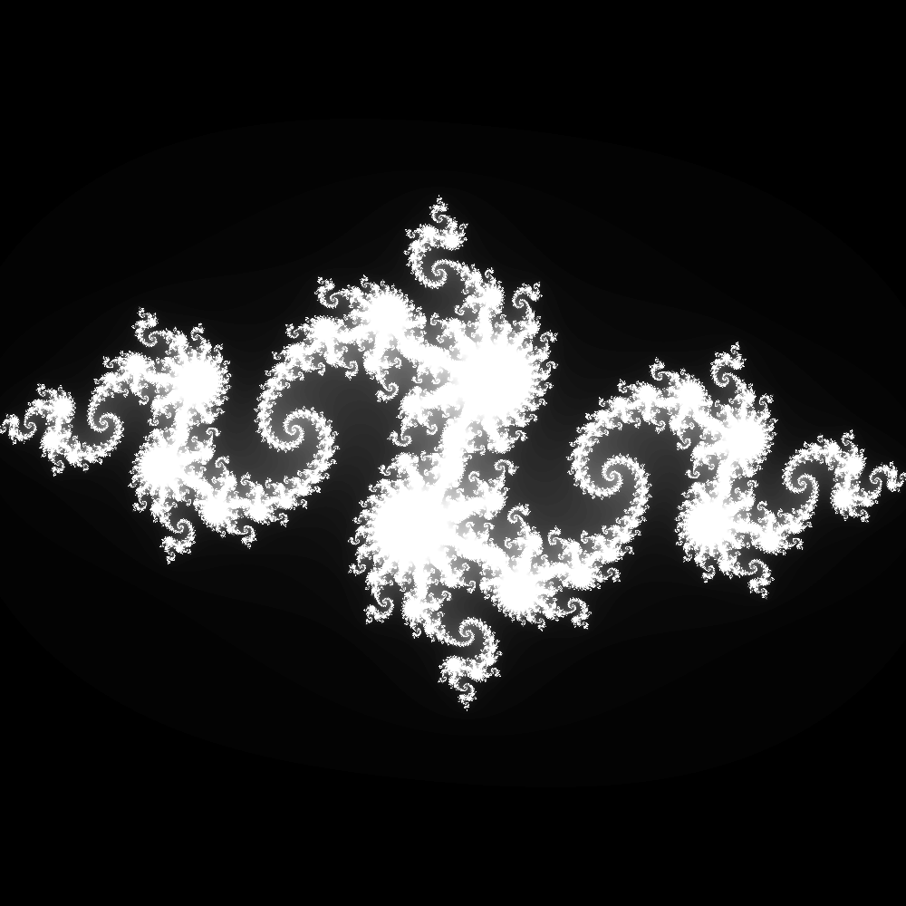
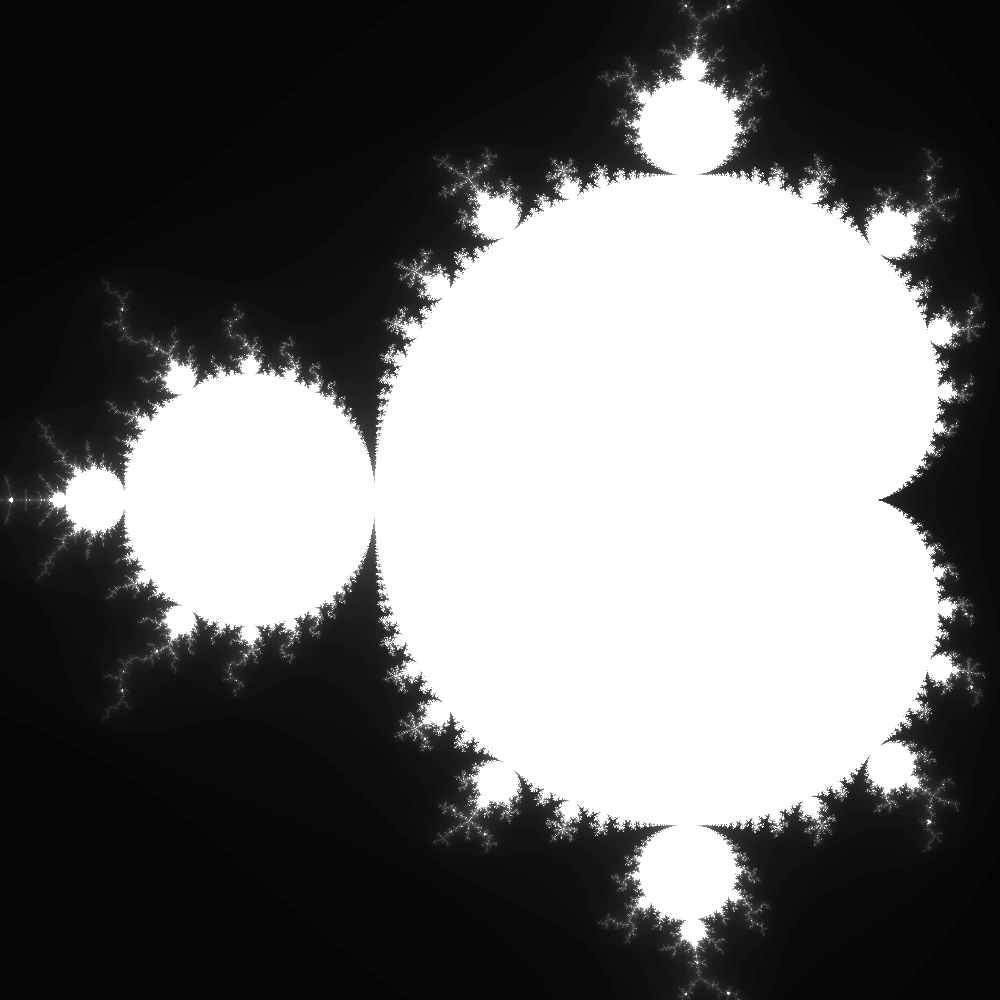
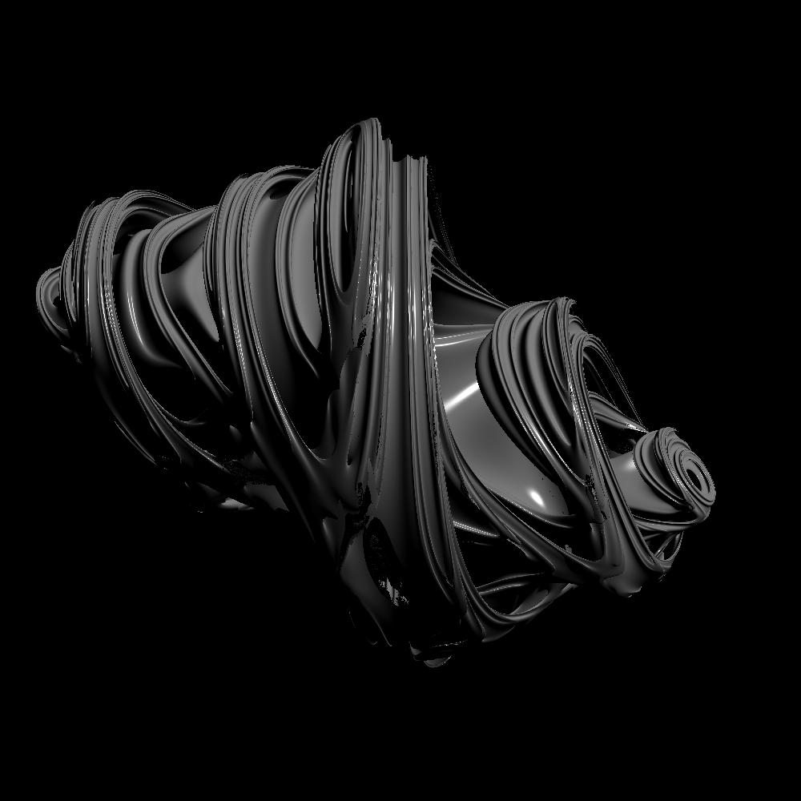
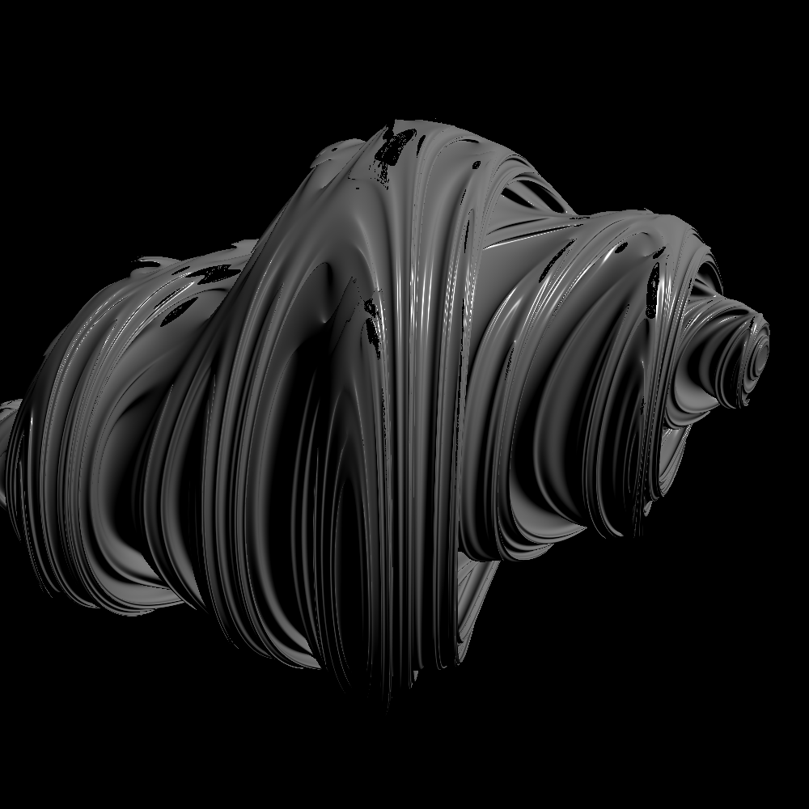
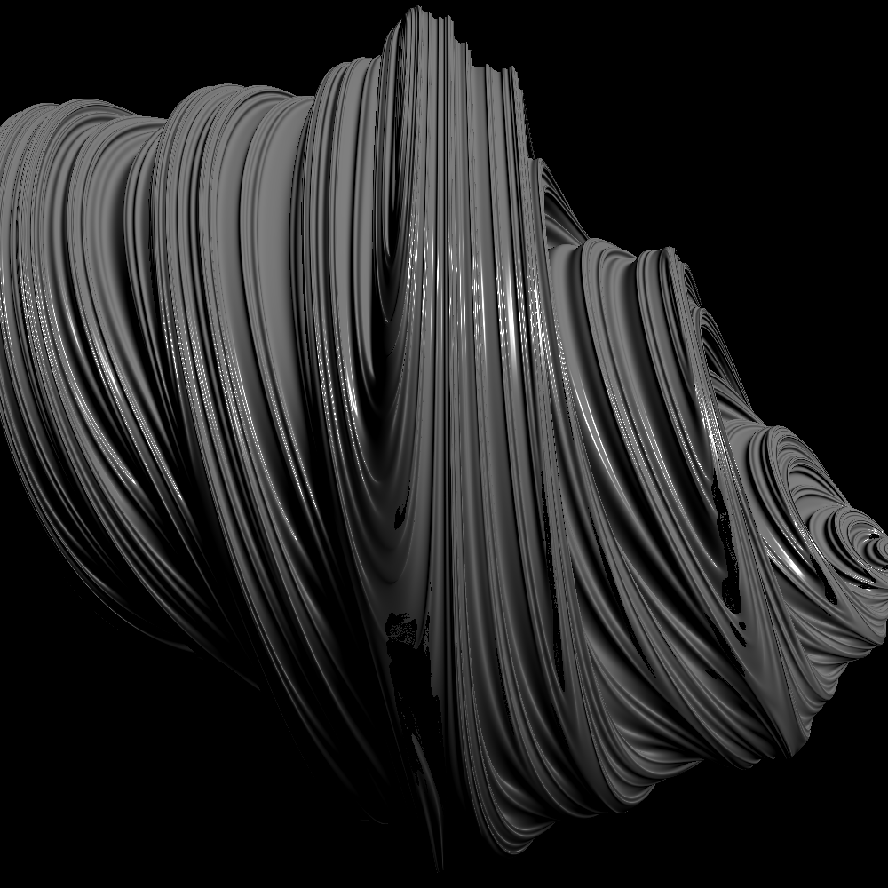

<!DOCTYPE html>
<html lang="ja" >
<head>
    <meta charset="utf-8" />
    <meta http-equiv="X-UA-Compatible" content="IE=edge,chrome=1" />
    <meta name="viewport" content="width=device-width, initial-scale=1" />
    <meta name="author" content="Hiroki Sakuma" />
	
	
	
	<title>Distance Estimators for 3D Fractals ｜ </title>
	
    
    
    <meta name="description" content="先日のポストでは DVR [Niemeyer et al., CVPR&#39;20] を参考にDNNでSigned Distance Function (SDF)をモデル化し，学習させてみた． forwardではスフィアトレーシングによるレンダリングを行い，backwardではオブジェクトとの交" />
    

    
    
    <meta name="keywords" content="Max/MSP, GLSL, Cinder, PyTorch" />
    

	
    
    <link rel="shortcut icon" href="https://hirokisakuma.com/images/favicon.ico" />

    <link rel="stylesheet" type="text/css" media="screen" href="https://hirokisakuma.com/css/normalize.css" />
    <link rel="stylesheet" type="text/css" media="screen" href="https://cdn.jsdelivr.net/npm/animate.css@4.1.0/animate.min.css" />
    <link rel="stylesheet" type="text/css" media="screen" href="https://hirokisakuma.com/css/zozo.css" />
	<link rel="stylesheet" type="text/css" media="screen" href="https://cdn.jsdelivr.net/npm/remixicon@2.5.0/fonts/remixicon.css" />
    <link rel="stylesheet" type="text/css" media="screen" href="https://hirokisakuma.com/css/highlight.css" />

    
    
</head>

<body>
    <div class="main animate__animated animate__fadeInDown">
        <div class="nav_container animated fadeInDown">
    <div class="site_nav" id="site_nav">
        <ul>
            
            <li>
                <a href="/">Home</a>
            </li>
            
            <li>
                <a href="/posts/">Archive</a>
            </li>
            
            <li>
                <a href="/tags/">Tags</a>
            </li>
            
            <li>
                <a href="/about/">About</a>
            </li>
            
        </ul>
    </div>
    <div class="menu_icon">
        <a id="menu_icon"><i class="ri-menu-line"></i></a>
    </div>
</div>
        <div class="header animated fadeInDown">
    <div class="site_title_container">
        <div class="site_title">
            <h1>
                <a href="https://hirokisakuma.com/">
                    <span></span>
                </a>
            </h1>
        </div>
        <div class="description">
            <p class="sub_title">Hiroki Sakuma</p>
            <div class="my_socials">
                
                
                
                
                <a href="https://github.com/skmhrk1209" title="github" target="_blank"><i class="ri-github-fill"></i></a>
                
                
                
                
                
                
                
                
                <a href="https://hirokisakuma.com/index.xml" type="application/rss+xml" title="rss" target="_blank"><i
                        class="ri-rss-fill"></i></a>
            </div>
        </div>
    </div>
</div>
        <div class="content">
            <div class="post_page">
                <div class="post animate__animated animate__fadeInDown">
                    <div class="post_title post_detail_title">
                        <h2><a href='/posts/distance_estimators/'>Distance Estimators for 3D Fractals</a></h2>
                        <span class="date">2020.10.25</span>
                    </div>
                    <div class="post_content markdown"><p>先日のポストでは <a href="https://openaccess.thecvf.com/content_CVPR_2020/papers/Niemeyer_Differentiable_Volumetric_Rendering_Learning_Implicit_3D_Representations_Without_3D_Supervision_CVPR_2020_paper.pdf">DVR [Niemeyer et al., CVPR'20]</a> を参考にDNNでSigned Distance Function (SDF)をモデル化し，学習させてみた．
forwardではスフィアトレーシングによるレンダリングを行い，backwardではオブジェクトとの交点の微分を陰関数微分により求めることで，微分可能レンダリングの枠組みでDNNの最適化を試みた．しかし，現状全く学習がうまく進んでいない．</p>
<p><a href="https://openaccess.thecvf.com/content_CVPR_2020/papers/Niemeyer_Differentiable_Volumetric_Rendering_Learning_Implicit_3D_Representations_Without_3D_Supervision_CVPR_2020_paper.pdf">DVR [Niemeyer et al., CVPR'20]</a> ではSigned Distance Functionではなく，Occupancy Networkをモデル化している．なぜこれをSigned Distance Functionに置き換えたのかというと，GLSLでそのままスフィアトレーシングによりレンダリングしたかったからだ．
しかしOccupancy Networkの方が，例えば物体の投影された領域が分かっている場合などは，教師信号を与えることができる点で最適化しやすいように思う．また，Signed Distance Functionをモデル化している <a href="https://openaccess.thecvf.com/content_CVPR_2020/papers/Jiang_SDFDiff_Differentiable_Rendering_of_Signed_Distance_Fields_for_3D_Shape_CVPR_2020_paper.pdf">SDFDiff [Jiang et al., CVPR'20]</a> などは3D deconvolutionによるボクセルベースのSigned Distance Functionを用いており，ビジョンにおける画像生成が2D deconvolutionによって成功していることを考えると，convolutionの力を借りないと難しいのかもしれない．</p>
<p>でもOccupancy Networkなどで表現されたオブジェクトなどのように，Signed Distance Functionが直接分からない場合でもスフィアトレーシングできるケースがあることを知った．</p>
<p>話が変わるが，フラクタルの有名な例としてJulia集合，Mandelbrot集合などがある．
以下のような2次関数が与えられた際に，</p>
<p>$$f_{c}(z)=z^{2}+c$$</p>
<p>Julia集合$\mathcal{J_{c}}$，Mandelbrot集合$\mathcal{M}$は以下で定義される．</p>
<p>$$\mathcal{J_{c}}=\{z: \lim_{n \to \infty}f_{c}^{n}(z) \not\to \infty\}$$
$$\mathcal{M}=\{c: \lim_{n \to \infty}f_{c}^{n}(z) \not\to \infty, f'_{c}(z)=0\}$$</p>
<p>$z,c$は通常複素数であり，$\mathcal{J_{c}},\mathcal{M}$を複素平面上に表すと，フラクタルが現れる．</p>
<br>
<div align="center">


<p><span>2D Julia set &amp; Mandelbrot set</span></p>
</div>
<br>
<p>ここでこれら$\mathcal{J_{c}},\mathcal{M}$を3次元に拡張したいと思うのは自然なことであり，$z,c$を四元数（
クォータニオン）として表して，最後に適当な超平面に射影すれば，実際に3次元のフラクタルを得ることができる．
ここでなぜ三元数を考えないのかと思ったが，$f_{c}$を適用することを考えると，$z,c$が定義される代数系は加法と乗法について閉じている必要があるが，三元数は乗法について閉じていないので，三元数を通して$\mathcal{J_{c}},\mathcal{M}$を得ることはできない，ということらしい．
実際に，三元数$a+bi+cj$を考え，$$ij=\alpha+\beta i+\gamma j$$を満たす実数$\alpha,\beta,\gamma$が存在するか調べると，
$$(\alpha\gamma-\beta)+(\alpha+\beta\gamma)i+(\gamma^{2}+1)j=0$$
より，$$\gamma^{2}+1=0$$を満たす実数$\gamma$は存在しない．よって三元数は乗法について閉じていない．
ということでわざわざ四元数を持ち出しているということだ．</p>
<p>これでクォータニオンを持ち込めば，3次元のフラクタルが得られることが分かったが，それをどうレンダリングすればいいのだろう．
2次元の場合は各ピクセルについて単に$\lim_{n \to \infty}f_{c}(z)$が収束するか否かを調べれば良かったが，3次元の場合はピクセルに向けて飛ばしたレイ上の全ての点をしらみつぶしに調べるわけにもいかない．
フラクタルまでの距離がわかれば，スフィアトレーシングできるが，結論から言うと$\mathcal{J_{c}},\mathcal{M}$に対するDistance Functionは存在しない．</p>
<p>が，Distance Functionの近似なら求めることができるようだ．</p>
<p><a href="http://pi.math.cornell.edu/~hubbard/OrsayEnglish.pdf">The Orsay Notes [Douady and Hubbard, 1984]</a> によると，点$z$におけるJulia集合$\mathcal{J_{c}}$に対するポテンシャル$G(z)$は以下で与えられる．</p>
<p>$$G(z)=\lim_{n \to \infty}\cfrac{1}{2^{n}}log|f_{c}^{n}(z)|$$</p>
<p>$\mathcal{J_{c}}$の定義から，$\mathcal{J_{c}}$に含まれる点$z$で$G(z)=0$となる．
このポテンシャル$G(z)$を用いると，$\mathcal{J_{c}}$の外側のある点$z$から$\mathcal{J_{c}}$の境界までの距離$d(z)$のboundは以下のように導かれる．</p>
<p>$$\cfrac{\sinh{G(z)}}{2e^{G(z)}|G'(z)|}&lt;d(z)&lt;\cfrac{2\sinh{G(z)}}{|G'(z)|}$$</p>
<p><a href="https://www.springer.com/gp/book/9781461283492">The Science of Fractal Images [Fisher, 1988]</a> のAppendix Dにここの導出が詳しく書いてある．
実用上は$z$が$\mathcal{J_{c}}$に十分近いとして，</p>
<p>$$d(z)&gt;\cfrac{|{f_{c}}^{n}(z)|}{2|{f_{c}^{n}}'(z)|}\log|f_{c}^{n}(z)|$$</p>
<p>とすることが多いようだ．これはポテンシャル$G(z)$をテイラー展開して1次近似してるのかと思ったが，厳密には違うっぽい．
いずれにせよ下限がわかれば，その分だけレイを進めることができそうだ．</p>
<p>ここで，${f_{c}^{n}}'(z)$はどうやって求めるのだろう．
考えられるのは数値微分か自動微分．今回は双対数（Dual Number）を用いたフォワード型の自動微分を行った．
今回微分したい$f_{c}(z)$は入力，出力ともにクォータニオンなので，クォータニオンの双対数（Dual Quaternion）を考えることになり，結構ややこしそうだ．</p>
<p>まずはクォータニオン用の演算を定義しておく．</p>
<div class="highlight"><pre class="chroma"><code class="language-cpp" data-lang="cpp"><span class="c1">// ---------------- quaternion ---------------- //
</span><span class="c1"></span>
<span class="n">vec4</span> <span class="nf">qAdd</span><span class="p">(</span><span class="n">vec4</span> <span class="n">q1</span><span class="p">,</span> <span class="n">vec4</span> <span class="n">q2</span><span class="p">)</span>
<span class="p">{</span>
    <span class="c1">// return vec4(q1.x + q2.x, q1.yzw + q2.yzw);
</span><span class="c1"></span>    <span class="k">return</span> <span class="n">q1</span> <span class="o">+</span> <span class="n">q2</span><span class="p">;</span>
<span class="p">}</span>

<span class="n">vec4</span> <span class="nf">qSub</span><span class="p">(</span><span class="n">vec4</span> <span class="n">q1</span><span class="p">,</span> <span class="n">vec4</span> <span class="n">q2</span><span class="p">)</span>
<span class="p">{</span>
    <span class="c1">// return vec4(q1.x - q2.x, q1.yzw - q2.yzw);
</span><span class="c1"></span>    <span class="k">return</span> <span class="n">q1</span> <span class="o">-</span> <span class="n">q2</span><span class="p">;</span>
<span class="p">}</span>

<span class="n">vec4</span> <span class="nf">qMul</span><span class="p">(</span><span class="n">vec4</span> <span class="n">q1</span><span class="p">,</span> <span class="n">vec4</span> <span class="n">q2</span><span class="p">)</span>
<span class="p">{</span>
    <span class="k">return</span> <span class="n">vec4</span><span class="p">(</span><span class="n">q1</span><span class="p">.</span><span class="n">x</span> <span class="o">*</span> <span class="n">q2</span><span class="p">.</span><span class="n">x</span> <span class="o">-</span> <span class="n">dot</span><span class="p">(</span><span class="n">q1</span><span class="p">.</span><span class="n">yzw</span><span class="p">,</span> <span class="n">q2</span><span class="p">.</span><span class="n">yzw</span><span class="p">),</span> <span class="n">q2</span><span class="p">.</span><span class="n">x</span> <span class="o">*</span> <span class="n">q1</span><span class="p">.</span><span class="n">yzw</span> <span class="o">+</span> <span class="n">q1</span><span class="p">.</span><span class="n">x</span> <span class="o">*</span> <span class="n">q2</span><span class="p">.</span><span class="n">yzw</span> <span class="o">+</span> <span class="n">cross</span><span class="p">(</span><span class="n">q1</span><span class="p">.</span><span class="n">yzw</span><span class="p">,</span> <span class="n">q2</span><span class="p">.</span><span class="n">yzw</span><span class="p">));</span>
<span class="p">}</span>

<span class="n">vec4</span> <span class="nf">qConj</span><span class="p">(</span><span class="n">vec4</span> <span class="n">q</span><span class="p">)</span>
<span class="p">{</span>
    <span class="k">return</span> <span class="n">vec4</span><span class="p">(</span><span class="n">q</span><span class="p">.</span><span class="n">x</span><span class="p">,</span> <span class="o">-</span><span class="n">q</span><span class="p">.</span><span class="n">yzw</span><span class="p">);</span>
<span class="p">}</span>

<span class="n">vec4</span> <span class="nf">qInv</span><span class="p">(</span><span class="n">vec4</span> <span class="n">q</span><span class="p">)</span>
<span class="p">{</span>
    <span class="k">return</span> <span class="n">qConj</span><span class="p">(</span><span class="n">q</span><span class="p">)</span> <span class="o">/</span> <span class="n">pow</span><span class="p">(</span><span class="n">length</span><span class="p">(</span><span class="n">q</span><span class="p">),</span><span class="mi">2</span><span class="p">);</span>
<span class="p">}</span>

<span class="n">vec4</span> <span class="nf">qDiv</span><span class="p">(</span><span class="n">vec4</span> <span class="n">q1</span><span class="p">,</span> <span class="n">vec4</span> <span class="n">q2</span><span class="p">)</span>
<span class="p">{</span>
    <span class="k">return</span> <span class="n">qMul</span><span class="p">(</span><span class="n">q1</span><span class="p">,</span> <span class="n">qInv</span><span class="p">(</span><span class="n">q2</span><span class="p">));</span>
<span class="p">}</span>

<span class="n">vec4</span> <span class="nf">qPow</span><span class="p">(</span><span class="n">vec4</span> <span class="n">q</span><span class="p">,</span> <span class="kt">int</span> <span class="n">n</span><span class="p">)</span>
<span class="p">{</span>
    <span class="n">vec4</span> <span class="n">p</span> <span class="o">=</span> <span class="n">vec4</span><span class="p">(</span><span class="mf">1.0</span><span class="p">,</span> <span class="n">vec3</span><span class="p">(</span><span class="mf">0.0</span><span class="p">));</span>
    <span class="k">for</span> <span class="p">(</span><span class="kt">int</span> <span class="n">i</span> <span class="o">=</span> <span class="mi">0</span><span class="p">;</span> <span class="n">i</span> <span class="o">&lt;</span> <span class="n">n</span><span class="p">;</span> <span class="o">++</span><span class="n">i</span><span class="p">)</span>
    <span class="p">{</span>
        <span class="n">p</span> <span class="o">=</span> <span class="n">qMul</span><span class="p">(</span><span class="n">p</span><span class="p">,</span> <span class="n">q</span><span class="p">);</span>
    <span class="p">}</span>
    <span class="k">return</span> <span class="n">p</span><span class="p">;</span>
<span class="p">}</span>
</code></pre></div><p>次にDual Quaternion用の演算．ここら辺は定義に従って実装するだけ．
演算子のオーバーロードができないのが辛い．</p>
<div class="highlight"><pre class="chroma"><code class="language-cpp" data-lang="cpp"><span class="c1">// ---------------- dual ---------------- //
</span><span class="c1"></span>
<span class="k">struct</span> <span class="nc">QDual</span>
<span class="p">{</span>
    <span class="n">vec4</span> <span class="n">q</span><span class="p">;</span>
    <span class="n">vec4</span> <span class="n">d</span><span class="p">;</span>
<span class="p">};</span>

<span class="n">QDual</span> <span class="nf">qdAdd</span><span class="p">(</span><span class="n">QDual</span> <span class="n">qd1</span><span class="p">,</span> <span class="n">QDual</span> <span class="n">qd2</span><span class="p">)</span>
<span class="p">{</span>
    <span class="k">return</span> <span class="n">QDual</span><span class="p">(</span><span class="n">qAdd</span><span class="p">(</span><span class="n">qd1</span><span class="p">.</span><span class="n">q</span><span class="p">,</span> <span class="n">qd2</span><span class="p">.</span><span class="n">q</span><span class="p">),</span> <span class="n">qAdd</span><span class="p">(</span><span class="n">qd1</span><span class="p">.</span><span class="n">d</span><span class="p">,</span> <span class="n">qd2</span><span class="p">.</span><span class="n">d</span><span class="p">));</span>
<span class="p">}</span>

<span class="n">QDual</span> <span class="nf">qdSub</span><span class="p">(</span><span class="n">QDual</span> <span class="n">qd1</span><span class="p">,</span> <span class="n">QDual</span> <span class="n">qd2</span><span class="p">)</span>
<span class="p">{</span>
    <span class="k">return</span> <span class="n">QDual</span><span class="p">(</span><span class="n">qSub</span><span class="p">(</span><span class="n">qd1</span><span class="p">.</span><span class="n">q</span><span class="p">,</span> <span class="n">qd2</span><span class="p">.</span><span class="n">q</span><span class="p">),</span> <span class="n">qSub</span><span class="p">(</span><span class="n">qd1</span><span class="p">.</span><span class="n">d</span><span class="p">,</span> <span class="n">qd2</span><span class="p">.</span><span class="n">d</span><span class="p">));</span>
<span class="p">}</span>

<span class="n">QDual</span> <span class="nf">qdMul</span><span class="p">(</span><span class="n">QDual</span> <span class="n">qd1</span><span class="p">,</span> <span class="n">QDual</span> <span class="n">qd2</span><span class="p">)</span>
<span class="p">{</span>
    <span class="k">return</span> <span class="n">QDual</span><span class="p">(</span><span class="n">qMul</span><span class="p">(</span><span class="n">qd1</span><span class="p">.</span><span class="n">q</span><span class="p">,</span> <span class="n">qd2</span><span class="p">.</span><span class="n">q</span><span class="p">),</span> <span class="n">qAdd</span><span class="p">(</span><span class="n">qMul</span><span class="p">(</span><span class="n">qd1</span><span class="p">.</span><span class="n">d</span><span class="p">,</span> <span class="n">qd2</span><span class="p">.</span><span class="n">q</span><span class="p">),</span> <span class="n">qMul</span><span class="p">(</span><span class="n">qd1</span><span class="p">.</span><span class="n">q</span><span class="p">,</span> <span class="n">qd2</span><span class="p">.</span><span class="n">d</span><span class="p">)));</span>
<span class="p">}</span>

<span class="n">QDual</span> <span class="nf">qdDiv</span><span class="p">(</span><span class="n">QDual</span> <span class="n">qd1</span><span class="p">,</span> <span class="n">QDual</span> <span class="n">qd2</span><span class="p">)</span>
<span class="p">{</span>
    <span class="k">return</span> <span class="n">QDual</span><span class="p">(</span><span class="n">qDiv</span><span class="p">(</span><span class="n">qd1</span><span class="p">.</span><span class="n">q</span><span class="p">,</span> <span class="n">qd2</span><span class="p">.</span><span class="n">q</span><span class="p">),</span> <span class="n">qDiv</span><span class="p">(</span><span class="n">qSub</span><span class="p">(</span><span class="n">qMul</span><span class="p">(</span><span class="n">qd1</span><span class="p">.</span><span class="n">d</span><span class="p">,</span> <span class="n">qd2</span><span class="p">.</span><span class="n">q</span><span class="p">),</span> <span class="n">qMul</span><span class="p">(</span><span class="n">qd1</span><span class="p">.</span><span class="n">q</span><span class="p">,</span> <span class="n">qd2</span><span class="p">.</span><span class="n">d</span><span class="p">)),</span> <span class="n">qMul</span><span class="p">(</span><span class="n">qd2</span><span class="p">.</span><span class="n">q</span><span class="p">,</span> <span class="n">qd2</span><span class="p">.</span><span class="n">q</span><span class="p">)));</span>
<span class="p">}</span>

<span class="n">QDual</span> <span class="nf">qdPow</span><span class="p">(</span><span class="n">QDual</span> <span class="n">qd</span><span class="p">,</span> <span class="kt">int</span> <span class="n">n</span><span class="p">)</span>
<span class="p">{</span>
    <span class="n">QDual</span> <span class="n">p</span> <span class="o">=</span> <span class="n">QDual</span><span class="p">(</span><span class="n">vec4</span><span class="p">(</span><span class="mf">1.0</span><span class="p">,</span> <span class="n">vec3</span><span class="p">(</span><span class="mf">0.0</span><span class="p">)),</span> <span class="n">vec4</span><span class="p">(</span><span class="mf">0.0</span><span class="p">,</span> <span class="n">vec3</span><span class="p">(</span><span class="mf">0.0</span><span class="p">)));</span>
    <span class="k">for</span> <span class="p">(</span><span class="kt">int</span> <span class="n">i</span> <span class="o">=</span> <span class="mi">0</span><span class="p">;</span> <span class="n">i</span> <span class="o">&lt;</span> <span class="n">n</span><span class="p">;</span> <span class="o">++</span><span class="n">i</span><span class="p">)</span>
    <span class="p">{</span>
        <span class="n">p</span> <span class="o">=</span> <span class="n">qdMul</span><span class="p">(</span><span class="n">p</span><span class="p">,</span> <span class="n">qd</span><span class="p">);</span>
    <span class="p">}</span>
    <span class="k">return</span> <span class="n">p</span><span class="p">;</span>
<span class="p">}</span>
</code></pre></div><p>一旦ここら辺を丁寧に実装すれば，低レベルのややこしい演算は抽象化できる．
双対数上で定義された関数$f$に双対数$x+\epsilon$をぶちこむと，$f(x+\epsilon)=f(x)+f'(x)\epsilon$となり，その虚部は常に導関数となっている．
双対数の虚部を，微分したい変数に関しては$1$，それ以外の変数に関しては$0$にしておき，あとは普通に関数に通すだけで良い．
普通にすごいな双対数．</p>
<p>今回で言うと，Julia集合$\mathcal{J_{c}}$に関しては$z$の虚部を$1$，Mandelbrot集合$\mathcal{M}$に関しては$c$の虚部を$1$にしておく．</p>
<p>つまづいたところは，${f_{c}^{n}}(z)$は入力，出力ともにクォータニオンなので，${f_{c}^{n}}'(z)$はヤコビ行列となりそうだが，$|{f_{c}^{n}}'(z)|$は何を意味するのか，ということだった．
いろいろな文献をみて回ったが，結局納得のできる答えは見つからなかった．</p>
<p>ただ，僕のMacBookでレンダリングすることを考えると，毎イテレーションでヤコビ行列を計算したくないのもあり，<a href="https://www.cs.cmu.edu/~kmcrane/Projects/QuaternionJulia/paper.pdf">Ray Tracing Quaternion Julia Sets on the GPU [Crane, 2015]</a> に従って，クォータニオンの実部に関する微分のみ計算することにした．</p>
<p>この場合はDual Quaternionの虚部のクォータニオンの実部を$1$，虚部を$0$にすれば良い．（ややこしい&hellip;）</p>
<p>これでJulia集合における${f_{c}^{n}}(z)$，${f_{c}^{n}}'(z)$を同時に求めることができそうだ．
${f_{c}^{n}}(z)$，${f_{c}^{n}}'(z)$がわかれば，距離推定により，スフィアトレーシングできる．
距離推定のソースは以下．</p>
<div class="highlight"><pre class="chroma"><code class="language-cpp" data-lang="cpp"><span class="c1">// ---------------- fractals ---------------- //
</span><span class="c1"></span>
<span class="kt">float</span> <span class="nf">sdfJulia</span><span class="p">(</span><span class="n">vec4</span> <span class="n">z</span><span class="p">,</span> <span class="n">vec4</span> <span class="n">c</span><span class="p">)</span>
<span class="p">{</span>
    <span class="n">QDual</span> <span class="n">zd</span> <span class="o">=</span> <span class="n">QDual</span><span class="p">(</span><span class="n">z</span><span class="p">,</span> <span class="n">vec4</span><span class="p">(</span><span class="mf">1.0</span><span class="p">,</span> <span class="n">vec3</span><span class="p">(</span><span class="mf">0.0</span><span class="p">)));</span>
    <span class="n">QDual</span> <span class="n">cd</span> <span class="o">=</span> <span class="n">QDual</span><span class="p">(</span><span class="n">c</span><span class="p">,</span> <span class="n">vec4</span><span class="p">(</span><span class="mf">0.0</span><span class="p">,</span> <span class="n">vec3</span><span class="p">(</span><span class="mf">0.0</span><span class="p">)));</span>
    <span class="k">for</span> <span class="p">(</span><span class="kt">int</span> <span class="n">i</span> <span class="o">=</span> <span class="mi">0</span><span class="p">;</span> <span class="n">i</span> <span class="o">&lt;</span> <span class="n">juliaIterations</span><span class="p">;</span> <span class="o">++</span><span class="n">i</span><span class="p">)</span>
    <span class="p">{</span>
        <span class="c1">// forward-mode automatic differentiation
</span><span class="c1"></span>        <span class="n">zd</span> <span class="o">=</span> <span class="n">qdAdd</span><span class="p">(</span><span class="n">qdPow</span><span class="p">(</span><span class="n">zd</span><span class="p">,</span> <span class="mi">2</span><span class="p">),</span> <span class="n">cd</span><span class="p">);</span>
        <span class="k">if</span> <span class="p">(</span><span class="n">length</span><span class="p">(</span><span class="n">zd</span><span class="p">.</span><span class="n">q</span><span class="p">)</span> <span class="o">&gt;</span> <span class="mf">2.0</span><span class="p">)</span> <span class="k">break</span><span class="p">;</span>
    <span class="p">}</span>
    
    <span class="k">return</span> <span class="p">(</span><span class="n">length</span><span class="p">(</span><span class="n">zd</span><span class="p">.</span><span class="n">q</span><span class="p">)</span> <span class="o">*</span> <span class="n">log</span><span class="p">(</span><span class="n">length</span><span class="p">(</span><span class="n">zd</span><span class="p">.</span><span class="n">q</span><span class="p">)))</span> <span class="o">/</span> <span class="p">(</span><span class="mi">2</span> <span class="o">*</span> <span class="n">length</span><span class="p">(</span><span class="n">zd</span><span class="p">.</span><span class="n">d</span><span class="p">));</span>
<span class="p">}</span>

<span class="kt">float</span> <span class="nf">sdfMandelbrot</span><span class="p">(</span><span class="n">vec4</span> <span class="n">c</span><span class="p">,</span> <span class="n">vec4</span> <span class="n">z</span><span class="p">)</span>
<span class="p">{</span>
    <span class="n">QDual</span> <span class="n">zd</span> <span class="o">=</span> <span class="n">QDual</span><span class="p">(</span><span class="n">z</span><span class="p">,</span> <span class="n">vec4</span><span class="p">(</span><span class="mf">0.0</span><span class="p">,</span> <span class="n">vec3</span><span class="p">(</span><span class="mf">0.0</span><span class="p">)));</span>
    <span class="n">QDual</span> <span class="n">cd</span> <span class="o">=</span> <span class="n">QDual</span><span class="p">(</span><span class="n">c</span><span class="p">,</span> <span class="n">vec4</span><span class="p">(</span><span class="mf">1.0</span><span class="p">,</span> <span class="n">vec3</span><span class="p">(</span><span class="mf">0.0</span><span class="p">)));</span>
    <span class="k">for</span> <span class="p">(</span><span class="kt">int</span> <span class="n">i</span> <span class="o">=</span> <span class="mi">0</span><span class="p">;</span> <span class="n">i</span> <span class="o">&lt;</span> <span class="n">mandelbrotIterations</span><span class="p">;</span> <span class="o">++</span><span class="n">i</span><span class="p">)</span>
    <span class="p">{</span>
        <span class="c1">// forward-mode automatic differentiation
</span><span class="c1"></span>        <span class="n">zd</span> <span class="o">=</span> <span class="n">qdAdd</span><span class="p">(</span><span class="n">qdPow</span><span class="p">(</span><span class="n">zd</span><span class="p">,</span> <span class="mi">2</span><span class="p">),</span> <span class="n">cd</span><span class="p">);</span>
        <span class="k">if</span> <span class="p">(</span><span class="n">length</span><span class="p">(</span><span class="n">zd</span><span class="p">.</span><span class="n">q</span><span class="p">)</span> <span class="o">&gt;</span> <span class="mf">2.0</span><span class="p">)</span> <span class="k">break</span><span class="p">;</span>
    <span class="p">}</span>
    
    <span class="k">return</span> <span class="p">(</span><span class="n">length</span><span class="p">(</span><span class="n">zd</span><span class="p">.</span><span class="n">q</span><span class="p">)</span> <span class="o">*</span> <span class="n">log</span><span class="p">(</span><span class="n">length</span><span class="p">(</span><span class="n">zd</span><span class="p">.</span><span class="n">q</span><span class="p">)))</span> <span class="o">/</span> <span class="p">(</span><span class="mi">2</span> <span class="o">*</span> <span class="n">length</span><span class="p">(</span><span class="n">zd</span><span class="p">.</span><span class="n">d</span><span class="p">));</span>
<span class="p">}</span>
</code></pre></div><p>あと必要なのは法線である．ポテンシャル$G(z)$または推定距離$d(z)$の微分が計算できれば良さそうだ．
$$G(z)=\lim_{n \to \infty}\cfrac{1}{2^{n}}log|f_{c}^{n}(z)|$$より，
$$\nabla G(z)=\cfrac{1}{2^{n}|f_{c}^{n}(z)|}\nabla\sqrt{f_{c}^{n}(z)^{T}f_{c}^{n}(z)}=\cfrac{{f_{c}^{n}}'(z)^{T}f_{c}^{n}(z)}{2^{n}|f_{c}^{n}(z)|^{2}}$$</p>
<p>これで距離推定と同時に法線も推定できることがわかった．</p>
<p>ただ法線に関してはヤコビ行列を計算したいので，DualQuaternionの虚部がmat4になる．mat4についてDualQuaternionの演算を定義するのは大変なので，シンプルにchain ruleでヤコビ行列を追跡していった．</p>
<p>$$f_{c}^{n}(z)=(f_{c}^{n-1}(z))^{2}+c$$</p>
<p>より，</p>
<p>$${f_{c}^{n}}’(z)=2\begin{pmatrix}f_{c}^{n-1}(z)_{x} &amp; -f_{c}^{n-1}(z)_{y} &amp; -f_{c}^{n-1}(z)_{z} &amp; -f_{c}^{n-1}(z)_{w}\\ f_{c}^{n-1}(z)_{y} &amp; f_{c}^{n-1}(z)_{x} &amp; 0 &amp; 0\\ f_{c}^{n-1}(z)_{z} &amp; 0 &amp; f_{c}^{n-1}(z)_{x} &amp; 0\\ f_{c}^{n-1}(z)_{w} &amp; 0 &amp; 0 &amp; f_{c}^{n-1}(z)_{x}\end{pmatrix}{f_{c}^{n-1}}'(z)$$</p>
<p>これで$f_{c}^{n}(z)$の計算と同時に${f_{c}^{n}}'(z)$も計算できる．
最初以下のように普通に計算しようとしたが，クォータニオンの場合にはそもそも計算できなかったので，上式は手で微分して突っ込んだ．</p>
<p>$${f_{c}^{n}}’(z)=2{f_{c}^{n-1}}(z){f_{c}^{n-1}}'(z)$$</p>
<p>chain ruleでこんなに簡単に追跡できるなら，双対数を導入する必要性はなかった気もするが，これを機にいろいろ知れたし．これはこれで良かったと思う．
法線推定のソースは以下．</p>
<div class="highlight"><pre class="chroma"><code class="language-cpp" data-lang="cpp"><span class="c1">// ---------------- fractals ---------------- //
</span><span class="c1"></span>
<span class="n">vec4</span> <span class="nf">normalJulia</span><span class="p">(</span><span class="n">vec4</span> <span class="n">z</span><span class="p">,</span> <span class="n">vec4</span> <span class="n">c</span><span class="p">)</span>
<span class="p">{</span>
    <span class="c1">// jacobian
</span><span class="c1"></span>    <span class="n">mat4</span> <span class="n">J</span> <span class="o">=</span> <span class="n">mat4</span><span class="p">(</span><span class="mf">1.0</span><span class="p">);</span>
    <span class="k">for</span> <span class="p">(</span><span class="kt">int</span> <span class="n">i</span> <span class="o">=</span> <span class="mi">0</span><span class="p">;</span> <span class="n">i</span> <span class="o">&lt;</span> <span class="n">juliaIterations</span><span class="p">;</span> <span class="o">++</span><span class="n">i</span><span class="p">)</span>
    <span class="p">{</span>
        <span class="c1">// forward-mode manual differentiation
</span><span class="c1"></span>        <span class="c1">// NOTE: glsl uses column-major matrices
</span><span class="c1"></span>        <span class="n">J</span> <span class="o">=</span> <span class="mi">2</span> <span class="o">*</span> <span class="n">mat4</span><span class="p">(</span>
            <span class="o">+</span><span class="n">z</span><span class="p">.</span><span class="n">x</span><span class="p">,</span> <span class="n">z</span><span class="p">.</span><span class="n">y</span><span class="p">,</span> <span class="n">z</span><span class="p">.</span><span class="n">z</span><span class="p">,</span> <span class="n">z</span><span class="p">.</span><span class="n">w</span><span class="p">,</span>
            <span class="o">-</span><span class="n">z</span><span class="p">.</span><span class="n">y</span><span class="p">,</span> <span class="n">z</span><span class="p">.</span><span class="n">x</span><span class="p">,</span> <span class="mf">0.0</span><span class="p">,</span> <span class="mf">0.0</span><span class="p">,</span>
            <span class="o">-</span><span class="n">z</span><span class="p">.</span><span class="n">z</span><span class="p">,</span> <span class="mf">0.0</span><span class="p">,</span> <span class="n">z</span><span class="p">.</span><span class="n">x</span><span class="p">,</span> <span class="mf">0.0</span><span class="p">,</span>
            <span class="o">-</span><span class="n">z</span><span class="p">.</span><span class="n">w</span><span class="p">,</span> <span class="mf">0.0</span><span class="p">,</span> <span class="mf">0.0</span><span class="p">,</span> <span class="n">z</span><span class="p">.</span><span class="n">x</span>
        <span class="p">)</span> <span class="o">*</span> <span class="n">J</span><span class="p">;</span>
        <span class="n">z</span> <span class="o">=</span> <span class="n">qAdd</span><span class="p">(</span><span class="n">qPow</span><span class="p">(</span><span class="n">z</span><span class="p">,</span> <span class="mi">2</span><span class="p">),</span> <span class="n">c</span><span class="p">);</span>
        <span class="k">if</span> <span class="p">(</span><span class="n">length</span><span class="p">(</span><span class="n">z</span><span class="p">)</span> <span class="o">&gt;</span> <span class="mf">2.0</span><span class="p">)</span> <span class="k">break</span><span class="p">;</span>
    <span class="p">}</span>
    
    <span class="k">return</span> <span class="n">z</span> <span class="o">*</span> <span class="n">J</span><span class="p">;</span>
<span class="p">}</span>

<span class="n">vec4</span> <span class="nf">normalMandelbrot</span><span class="p">(</span><span class="n">vec4</span> <span class="n">c</span><span class="p">,</span> <span class="n">vec4</span> <span class="n">z</span><span class="p">)</span>
<span class="p">{</span>
    <span class="c1">// jacobian
</span><span class="c1"></span>    <span class="n">mat4</span> <span class="n">J</span> <span class="o">=</span> <span class="n">mat4</span><span class="p">(</span><span class="mf">0.0</span><span class="p">);</span>
    <span class="k">for</span> <span class="p">(</span><span class="kt">int</span> <span class="n">i</span> <span class="o">=</span> <span class="mi">0</span><span class="p">;</span> <span class="n">i</span> <span class="o">&lt;</span> <span class="n">mandelbrotIterations</span><span class="p">;</span> <span class="o">++</span><span class="n">i</span><span class="p">)</span>
    <span class="p">{</span>
        <span class="c1">// forward-mode manual differentiation
</span><span class="c1"></span>        <span class="c1">// NOTE: glsl uses column-major matrices
</span><span class="c1"></span>        <span class="n">J</span> <span class="o">=</span> <span class="mi">2</span> <span class="o">*</span> <span class="n">mat4</span><span class="p">(</span>
            <span class="o">+</span><span class="n">z</span><span class="p">.</span><span class="n">x</span><span class="p">,</span> <span class="n">z</span><span class="p">.</span><span class="n">y</span><span class="p">,</span> <span class="n">z</span><span class="p">.</span><span class="n">z</span><span class="p">,</span> <span class="n">z</span><span class="p">.</span><span class="n">w</span><span class="p">,</span>
            <span class="o">-</span><span class="n">z</span><span class="p">.</span><span class="n">y</span><span class="p">,</span> <span class="n">z</span><span class="p">.</span><span class="n">x</span><span class="p">,</span> <span class="mf">0.0</span><span class="p">,</span> <span class="mf">0.0</span><span class="p">,</span>
            <span class="o">-</span><span class="n">z</span><span class="p">.</span><span class="n">z</span><span class="p">,</span> <span class="mf">0.0</span><span class="p">,</span> <span class="n">z</span><span class="p">.</span><span class="n">x</span><span class="p">,</span> <span class="mf">0.0</span><span class="p">,</span>
            <span class="o">-</span><span class="n">z</span><span class="p">.</span><span class="n">w</span><span class="p">,</span> <span class="mf">0.0</span><span class="p">,</span> <span class="mf">0.0</span><span class="p">,</span> <span class="n">z</span><span class="p">.</span><span class="n">x</span>
        <span class="p">)</span> <span class="o">*</span> <span class="n">J</span> <span class="o">+</span> <span class="n">mat4</span><span class="p">(</span><span class="mf">1.0</span><span class="p">);</span>
        <span class="n">z</span> <span class="o">=</span> <span class="n">qAdd</span><span class="p">(</span><span class="n">qPow</span><span class="p">(</span><span class="n">z</span><span class="p">,</span> <span class="mi">2</span><span class="p">),</span> <span class="n">c</span><span class="p">);</span>
        <span class="k">if</span> <span class="p">(</span><span class="n">length</span><span class="p">(</span><span class="n">z</span><span class="p">)</span> <span class="o">&gt;</span> <span class="mf">2.0</span><span class="p">)</span> <span class="k">break</span><span class="p">;</span>
    <span class="p">}</span>
    
    <span class="k">return</span> <span class="n">z</span> <span class="o">*</span> <span class="n">J</span><span class="p">;</span>
<span class="p">}</span>
</code></pre></div><p>これで推定された法線を使ってシェーディングできる．今回はシンプルなPhong反射モデルを使ってシェーディングした．
残りのソースは以下．</p>
<div class="highlight"><pre class="chroma"><code class="language-cpp" data-lang="cpp"><span class="cp">#version 150
</span><span class="cp"></span>
<span class="c1">// ---------------- variables ---------------- //
</span><span class="c1"></span>
<span class="n">uniform</span> <span class="kt">float</span> <span class="n">uElapsedSeconds</span><span class="p">;</span>
<span class="n">uniform</span> <span class="n">mat4</span> <span class="n">uViewMatrix</span><span class="p">;</span>
<span class="n">uniform</span> <span class="n">mat4</span> <span class="n">uProjectionMatrix</span><span class="p">;</span>
<span class="n">uniform</span> <span class="n">vec2</span> <span class="n">uResolution</span><span class="p">;</span>
<span class="n">uniform</span> <span class="n">vec3</span> <span class="n">uCameraPosition</span><span class="p">;</span>
<span class="n">uniform</span> <span class="n">vec3</span> <span class="n">uLightDirection</span> <span class="o">=</span> <span class="n">vec3</span><span class="p">(</span><span class="o">-</span><span class="mf">1.0</span><span class="p">,</span> <span class="o">-</span><span class="mf">1.0</span><span class="p">,</span> <span class="o">-</span><span class="mf">1.0</span><span class="p">);</span>
<span class="n">uniform</span> <span class="n">vec4</span> <span class="n">uLightAmbientColor</span> <span class="o">=</span> <span class="n">vec4</span><span class="p">(</span><span class="n">vec3</span><span class="p">(</span><span class="mf">0.0</span><span class="p">),</span> <span class="mf">1.0</span><span class="p">);</span>
<span class="n">uniform</span> <span class="n">vec4</span> <span class="n">uLightDiffuseColor</span> <span class="o">=</span> <span class="n">vec4</span><span class="p">(</span><span class="n">vec3</span><span class="p">(</span><span class="mf">0.5</span><span class="p">),</span> <span class="mf">1.0</span><span class="p">);</span>
<span class="n">uniform</span> <span class="n">vec4</span> <span class="n">uLightSpecularColor</span> <span class="o">=</span> <span class="n">vec4</span><span class="p">(</span><span class="n">vec3</span><span class="p">(</span><span class="mf">1.0</span><span class="p">),</span> <span class="mf">1.0</span><span class="p">);</span>
<span class="n">uniform</span> <span class="n">vec4</span> <span class="n">uMaterialAmbientColor</span> <span class="o">=</span> <span class="n">vec4</span><span class="p">(</span><span class="n">vec3</span><span class="p">(</span><span class="mf">1.0</span><span class="p">),</span> <span class="mf">1.0</span><span class="p">);</span>
<span class="n">uniform</span> <span class="n">vec4</span> <span class="n">uMaterialDiffuseColor</span> <span class="o">=</span> <span class="n">vec4</span><span class="p">(</span><span class="n">vec3</span><span class="p">(</span><span class="mf">1.0</span><span class="p">),</span> <span class="mf">1.0</span><span class="p">);</span>
<span class="n">uniform</span> <span class="n">vec4</span> <span class="n">uMaterialSpecularColor</span> <span class="o">=</span> <span class="n">vec4</span><span class="p">(</span><span class="n">vec3</span><span class="p">(</span><span class="mf">1.0</span><span class="p">),</span> <span class="mf">1.0</span><span class="p">);</span>
<span class="n">uniform</span> <span class="n">vec4</span> <span class="n">uMaterialEmissionColor</span> <span class="o">=</span> <span class="n">vec4</span><span class="p">(</span><span class="n">vec3</span><span class="p">(</span><span class="mf">0.0</span><span class="p">),</span> <span class="mf">1.0</span><span class="p">);</span>
<span class="n">uniform</span> <span class="kt">float</span> <span class="n">uShininess</span> <span class="o">=</span> <span class="mf">64.0</span><span class="p">;</span>
<span class="n">uniform</span> <span class="kt">int</span> <span class="n">juliaIterations</span> <span class="o">=</span> <span class="mi">10</span><span class="p">;</span>
<span class="n">uniform</span> <span class="kt">int</span> <span class="n">mandelbrotIterations</span> <span class="o">=</span> <span class="mi">10</span><span class="p">;</span>
<span class="n">uniform</span> <span class="kt">int</span> <span class="n">marchingIterations</span> <span class="o">=</span> <span class="mi">500</span><span class="p">;</span>
<span class="n">uniform</span> <span class="kt">float</span> <span class="n">convergenceCriteria</span> <span class="o">=</span> <span class="mf">1e-4</span><span class="p">;</span>
<span class="n">out</span> <span class="n">vec4</span> <span class="n">oFragColor</span><span class="p">;</span>

<span class="c1">// ---------------- utilities ---------------- //
</span><span class="c1"></span>
<span class="n">vec2</span> <span class="nf">linmap</span><span class="p">(</span><span class="n">vec2</span> <span class="n">in_val</span><span class="p">,</span> <span class="n">vec2</span> <span class="n">in_min</span><span class="p">,</span> <span class="n">vec2</span> <span class="n">in_max</span><span class="p">,</span> <span class="n">vec2</span> <span class="n">out_min</span><span class="p">,</span> <span class="n">vec2</span> <span class="n">out_max</span><span class="p">)</span>
<span class="p">{</span>
    <span class="k">return</span> <span class="p">(</span><span class="n">in_val</span> <span class="o">-</span> <span class="n">in_min</span><span class="p">)</span> <span class="o">/</span> <span class="p">(</span><span class="n">in_max</span> <span class="o">-</span> <span class="n">in_min</span><span class="p">)</span> <span class="o">*</span> <span class="p">(</span><span class="n">out_max</span> <span class="o">-</span> <span class="n">out_min</span><span class="p">)</span> <span class="o">+</span> <span class="n">out_min</span><span class="p">;</span>
<span class="p">}</span>

<span class="c1">// ---------------- reflection ---------------- //
</span><span class="c1"></span>
<span class="n">vec4</span> <span class="nf">phongReflection</span><span class="p">(</span>
    <span class="n">vec3</span> <span class="n">surfaceNormal</span><span class="p">,</span>
    <span class="n">vec3</span> <span class="n">eyeDirection</span><span class="p">,</span>
    <span class="n">vec3</span> <span class="n">lightDirection</span><span class="p">,</span>
    <span class="n">vec4</span> <span class="n">lightAmbientColor</span><span class="p">,</span>
    <span class="n">vec4</span> <span class="n">lightDiffuseColor</span><span class="p">,</span>
    <span class="n">vec4</span> <span class="n">lightSpecularColor</span><span class="p">,</span>
    <span class="n">vec4</span> <span class="n">materialAmbientColor</span><span class="p">,</span>
    <span class="n">vec4</span> <span class="n">materialDiffuseColor</span><span class="p">,</span>
    <span class="n">vec4</span> <span class="n">materialSpecularColor</span><span class="p">,</span>
    <span class="n">vec4</span> <span class="n">materialEmissionColor</span><span class="p">,</span>
    <span class="kt">float</span> <span class="n">shineness</span>
<span class="p">)</span>
<span class="p">{</span>
    <span class="n">surfaceNormal</span> <span class="o">=</span> <span class="n">normalize</span><span class="p">(</span><span class="n">surfaceNormal</span><span class="p">);</span>
    <span class="n">eyeDirection</span> <span class="o">=</span> <span class="n">normalize</span><span class="p">(</span><span class="n">eyeDirection</span><span class="p">);</span>
    <span class="n">lightDirection</span> <span class="o">=</span> <span class="n">normalize</span><span class="p">(</span><span class="n">lightDirection</span><span class="p">);</span>
    <span class="n">vec4</span> <span class="n">ambientColor</span> <span class="o">=</span> <span class="n">lightAmbientColor</span> <span class="o">*</span> <span class="n">materialAmbientColor</span><span class="p">;</span>
    <span class="n">vec4</span> <span class="n">diffuseColor</span> <span class="o">=</span> <span class="n">lightDiffuseColor</span> <span class="o">*</span> <span class="n">materialDiffuseColor</span><span class="p">;</span>
    <span class="n">vec4</span> <span class="n">specularColor</span> <span class="o">=</span> <span class="n">lightSpecularColor</span> <span class="o">*</span> <span class="n">materialSpecularColor</span><span class="p">;</span>
    <span class="n">diffuseColor</span> <span class="o">*=</span> <span class="n">max</span><span class="p">(</span><span class="n">dot</span><span class="p">(</span><span class="o">-</span><span class="n">lightDirection</span><span class="p">,</span> <span class="n">surfaceNormal</span><span class="p">),</span> <span class="mf">0.0</span><span class="p">);</span>
    <span class="n">specularColor</span> <span class="o">*=</span> <span class="n">pow</span><span class="p">(</span><span class="n">max</span><span class="p">(</span><span class="n">dot</span><span class="p">(</span><span class="n">reflect</span><span class="p">(</span><span class="n">lightDirection</span><span class="p">,</span> <span class="n">surfaceNormal</span><span class="p">),</span> <span class="o">-</span><span class="n">eyeDirection</span><span class="p">),</span> <span class="mf">0.0</span><span class="p">),</span> <span class="n">shineness</span><span class="p">);</span>
    <span class="n">vec4</span> <span class="n">color</span> <span class="o">=</span> <span class="n">clamp</span><span class="p">(</span><span class="n">ambientColor</span> <span class="o">+</span> <span class="n">diffuseColor</span> <span class="o">+</span> <span class="n">specularColor</span> <span class="o">+</span> <span class="n">materialEmissionColor</span><span class="p">,</span> <span class="mf">0.0</span><span class="p">,</span> <span class="mf">1.0</span><span class="p">);</span>
    <span class="k">return</span> <span class="n">color</span><span class="p">;</span>
<span class="p">}</span>

<span class="c1">// ---------------- main ---------------- //
</span><span class="c1"></span>
<span class="kt">void</span> <span class="nf">main</span><span class="p">()</span>
<span class="p">{</span>
    <span class="n">vec2</span> <span class="n">fragCoord</span> <span class="o">=</span> <span class="n">linmap</span><span class="p">(</span><span class="n">gl_FragCoord</span><span class="p">.</span><span class="n">xy</span><span class="p">,</span> <span class="n">vec2</span><span class="p">(</span><span class="mi">0</span><span class="p">,</span> <span class="mi">0</span><span class="p">),</span> <span class="n">uResolution</span><span class="p">,</span> <span class="n">vec2</span><span class="p">(</span><span class="o">-</span><span class="mi">1</span><span class="p">,</span> <span class="o">-</span><span class="mi">1</span><span class="p">),</span> <span class="n">vec2</span><span class="p">(</span><span class="mi">1</span><span class="p">,</span> <span class="mi">1</span><span class="p">));</span>
    
    <span class="c1">// why this does not work?
</span><span class="c1"></span>    <span class="c1">// vec3 rayDirection = normalize((inverse(uViewMatrix) * inverse(uProjectionMatrix) * vec4(vec3(fragCoord, 1.0), 0.0)).xyz);
</span><span class="c1"></span>    
    <span class="n">vec3</span> <span class="n">rayDirection</span> <span class="o">=</span> <span class="n">normalize</span><span class="p">((</span><span class="n">inverse</span><span class="p">(</span><span class="n">mat3</span><span class="p">(</span><span class="n">uViewMatrix</span><span class="p">))</span> <span class="o">*</span> <span class="n">inverse</span><span class="p">(</span><span class="n">mat3</span><span class="p">(</span><span class="n">uProjectionMatrix</span><span class="p">))</span> <span class="o">*</span> <span class="n">vec3</span><span class="p">(</span><span class="n">fragCoord</span><span class="p">,</span> <span class="mf">1.0</span><span class="p">)).</span><span class="n">xyz</span><span class="p">);</span>
    <span class="n">vec3</span> <span class="n">rayPosition</span> <span class="o">=</span> <span class="n">uCameraPosition</span><span class="p">;</span>
    
    <span class="n">vec4</span> <span class="n">juliaType</span> <span class="o">=</span> <span class="mf">0.45</span> <span class="o">*</span> <span class="n">cos</span><span class="p">(</span><span class="n">vec4</span><span class="p">(</span><span class="mf">0.5</span><span class="p">,</span> <span class="mf">3.9</span><span class="p">,</span> <span class="mf">1.4</span><span class="p">,</span> <span class="mf">1.1</span><span class="p">)</span> <span class="o">+</span> <span class="n">uElapsedSeconds</span> <span class="o">*</span> <span class="mf">0.15</span> <span class="o">*</span> <span class="n">vec4</span><span class="p">(</span><span class="mf">1.2</span><span class="p">,</span> <span class="mf">1.7</span><span class="p">,</span> <span class="mf">1.3</span><span class="p">,</span> <span class="mf">2.5</span><span class="p">))</span> <span class="o">-</span> <span class="n">vec4</span><span class="p">(</span><span class="mf">0.3</span><span class="p">,</span> <span class="mf">0.0</span><span class="p">,</span> <span class="mf">0.0</span><span class="p">,</span> <span class="mf">0.0</span><span class="p">);</span>
    <span class="n">vec4</span> <span class="n">criticalPoint</span> <span class="o">=</span> <span class="n">vec4</span><span class="p">(</span><span class="mf">0.0</span><span class="p">);</span>
    
    <span class="k">for</span> <span class="p">(</span><span class="kt">int</span> <span class="n">i</span> <span class="o">=</span> <span class="mi">0</span><span class="p">;</span> <span class="n">i</span> <span class="o">&lt;</span> <span class="n">marchingIterations</span><span class="p">;</span> <span class="o">++</span><span class="n">i</span><span class="p">)</span>
    <span class="p">{</span>
        <span class="kt">float</span> <span class="n">sdf</span> <span class="o">=</span> <span class="n">sdfJulia</span><span class="p">(</span><span class="n">vec4</span><span class="p">(</span><span class="n">rayPosition</span><span class="p">,</span> <span class="mf">0.0</span><span class="p">),</span> <span class="n">juliaType</span><span class="p">);</span>
        <span class="c1">// float sdf = sdfMandelbrot(vec4(rayPosition, 0.0), criticalPoint);
</span><span class="c1"></span>        <span class="n">rayPosition</span> <span class="o">+=</span> <span class="n">sdf</span> <span class="o">*</span> <span class="n">rayDirection</span><span class="p">;</span>
        <span class="k">if</span> <span class="p">(</span><span class="n">abs</span><span class="p">(</span><span class="n">sdf</span><span class="p">)</span> <span class="o">&lt;</span> <span class="n">convergenceCriteria</span><span class="p">)</span>
        <span class="p">{</span>
            <span class="n">vec3</span> <span class="n">surfaceNormal</span> <span class="o">=</span> <span class="n">normalize</span><span class="p">(</span><span class="n">normalJulia</span><span class="p">(</span><span class="n">vec4</span><span class="p">(</span><span class="n">rayPosition</span><span class="p">,</span> <span class="mf">0.0</span><span class="p">),</span> <span class="n">juliaType</span><span class="p">).</span><span class="n">xyz</span><span class="p">);</span>
            <span class="c1">// vec3 surfaceNormal = normalize(normalMandelbrot(vec4(rayPosition, 0.0), criticalPoint).xyz);
</span><span class="c1"></span>            <span class="n">oFragColor</span> <span class="o">=</span> <span class="n">phongReflection</span><span class="p">(</span>
                <span class="n">surfaceNormal</span><span class="p">,</span>
                <span class="n">rayDirection</span><span class="p">,</span>
                <span class="n">uLightDirection</span><span class="p">,</span>
                <span class="n">uLightAmbientColor</span><span class="p">,</span>
                <span class="n">uLightDiffuseColor</span><span class="p">,</span>
                <span class="n">uLightSpecularColor</span><span class="p">,</span>
                <span class="n">uMaterialAmbientColor</span><span class="p">,</span>
                <span class="n">uMaterialDiffuseColor</span><span class="p">,</span>
                <span class="n">uMaterialSpecularColor</span><span class="p">,</span>
                <span class="n">uMaterialEmissionColor</span><span class="p">,</span>
                <span class="n">uShininess</span>
            <span class="p">);</span>
            <span class="k">return</span><span class="p">;</span>
        <span class="p">}</span>
    <span class="p">}</span>
    <span class="n">oFragColor</span> <span class="o">=</span> <span class="n">vec4</span><span class="p">(</span><span class="n">vec3</span><span class="p">(</span><span class="mf">0.0</span><span class="p">),</span> <span class="mf">1.0</span><span class="p">);</span>
<span class="p">}</span>
</code></pre></div><p>実際にGLSLでレンダリングしてみた結果が以下．
ここまで来るのは正直結構大変だったが，鏡面反射してくれてるのを見ると，法線が推定できている感じがして嬉しい
もっと格好良くレンダリングしてみたかったが，もっと勉強しないと格好良くは描けない．</p>
<br>
<div align="center">




<p><span>3D Julia set</span></p>
</div>
<br>
<br>
<div align="center">


<p><span>3D Mandelbrot set</span></p>
</div>
<br>
</div>
                    <div class="post_footer">
                        
                        <div class="meta">
                            <div class="info">
                                <span class="field tags">
                                    <i class="ri-stack-line"></i>
                                    
                                    <a href="https://hirokisakuma.com/tags/computer-graphics/">computer graphics</a>
                                    
                                    <a href="https://hirokisakuma.com/tags/sphere-tracing/">sphere tracing</a>
                                    
                                    <a href="https://hirokisakuma.com/tags/fractals/">fractals</a>
                                    
                                    <a href="https://hirokisakuma.com/tags/glsl/">glsl</a>
                                    
                                </span>
                            </div>
                        </div>
                        
                    </div>
                </div>
                
                
                <div class="doc_comments"></div>
                
            </div>
        </div>
    </div>
    <a id="back_to_top" href="#" class="back_to_top"><i class="ri-arrow-up-s-line"></i></a>
    <footer class="footer">
    <div class="powered_by">
        <a href="https://varkai.com">Designed by VarKai,</a>
        <a href="http://www.gohugo.io/">Proudly published with Hugo</a>
    </div>

    <div class="footer_slogan">
        <span>¯\_(ツ)_/¯</span>
    </div>
</footer>
    <script src="https://hirokisakuma.com/js/jquery-3.5.1.min.js"></script>
<link href="https://hirokisakuma.com/css/fancybox.min.css" rel="stylesheet">
<script src="https://hirokisakuma.com/js/fancybox.min.js"></script>
<script src="https://hirokisakuma.com/js/zozo.js"></script>


<script type="text/javascript" async
    src="https://cdn.bootcss.com/mathjax/2.7.5/MathJax.js?config=TeX-AMS-MML_HTMLorMML">
        MathJax.Hub.Config({
            tex2jax: {
                inlineMath: [['$', '$'], ['\\(', '\\)']],
                displayMath: [['$$', '$$'], ['\[\[', '\]\]']],
                processEscapes: true,
                processEnvironments: true,
                skipTags: ['script', 'noscript', 'style', 'textarea', 'pre'],
                TeX: {
                    equationNumbers: { autoNumber: "AMS" },
                    extensions: ["AMSmath.js", "AMSsymbols.js"]
                }
            }
        });

        MathJax.Hub.Queue(function () {
            
            
            
            var all = MathJax.Hub.getAllJax(), i;
            for (i = 0; i < all.length; i += 1) {
                all[i].SourceElement().parentNode.className += ' has-jax';
            }
        });
    </script>

<style>
    code.has-jax {
        font: inherit;
        font-size: 100%;
        background: inherit;
        border: inherit;
        color: #515151;
    }
</style>


<script type="application/javascript">
var doNotTrack = false;
if (!doNotTrack) {
	window.ga=window.ga||function(){(ga.q=ga.q||[]).push(arguments)};ga.l=+new Date;
	ga('create', 'UA-179623902-1', 'auto');
	
	ga('send', 'pageview');
}
</script>
<script async src='https://www.google-analytics.com/analytics.js'></script>

</body>

</html>